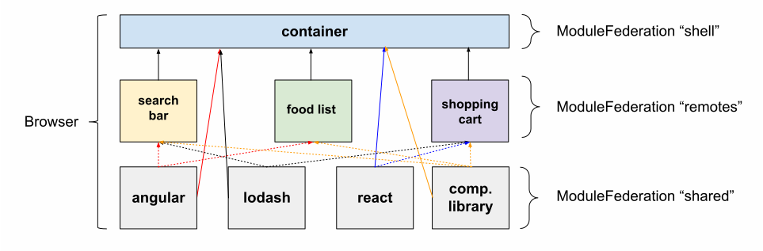

# Micro Frontends <!-- .element: class="deck-title" --> source: <!-- .element: class="attribution" --> https://experiencenomad.com/leo-villareal-buckyball-buckminster-fuller-buckyballs/ Note: * 1 hour interactive session * brief overview followed by some examples * Ask questions! * (Assignments)
github.com/mdvanes
## Micro _what_? Note: - First part also for back-end, last part more for front-end - For back-end: what is monolith? - Where is the treshold for a monolith? - How do you prevent monolith? Solutions? - Who is at a project that uses micro services? Why do they use it? - Front-end: Who is (or has been) at a project with more than 10 devs? More than 50? More than 200? - Back-end: How would you apply micro services to the front-end? - Micro services vs Micro Frontends - MFEs are: any range of solutions to integrate a collection of smaller frontends into one application (https://mdworld.nl/micro-frontends-in-a-nutshell) - MFEs are not new
Note: - How would you build this? - What are weak points of this solution?
[Go to order form](#) Note: Hyperlinks * code is duplicated * visible reloads when navigating
- hyperlinks - iframes - deployment monolith - Web Components - Module Federation Note: - TODO How (deployment) monoliths? - TODO Communication between MFEs. Navigation between. - TODO App State Management (custom communication layer like in first course)
 Note: - Micro vs Macro Web Components - Angular Elements - Shadow DOM - Resource duplication (e.g. lodash in diagram)
 Note: - MFE types can and will be combined!

# WWMSD? <!-- .element: style="text-shadow: 4px 4px 0 black; font-size: 15rem" --> (What Would Manfred Steyer Do?) <!-- .element: class="fragment" -->
 - https://www.angulararchitects.io/en/aktuelles/a-software-architects-approach-towards/
 Note: - you don't want iframes - instead of "Webpack 5?" you can also read "I want to deduplicate shared resources and to have easier navigation/state integration" - Webpack alternatives (Rollup, Vite, esbuild), no MF support (for now)
 Note: - Familiar with Component Libraries/Storybook? - Make sense to improve reusability of components
Monorepos
 Note: - And CLI/scaffolding
 Note: - (This is just a fallback for when site offline) - Show that previous slide is live by using button
```ts [] // apps/portfolio/webpack.config.js output: { uniqueName: "portfolio", publicPath: "auto", }, ... plugins: [ new ModuleFederationPlugin({ name: "portfolio", filename: "remoteEntry.js", exposes: { "./Module": "apps/portfolio/src/app/remote-entry/entry.module.ts", }, }), ], ``` Note: - note "name" and "exposes" - publicPath is path used for assets - 'auto' uses e.g. self.location
```ts [] // src/index.ts import('./bootstrap'); // Async! // src/bootstrap.js ... ReactDOM.render(<App/>, document.getElementById('root')); // or for Angular in main.ts import { platformBrowserDynamic } from '@angular/platform-browser-dynamic'; platformBrowserDynamic().bootstrapModule(AppModule) ``` Note: - Segue to explain bootstrap.js - You will most of the time see such a bootstrapping "layer" - async boundary for Webpack to produce a chunk that can be consumed with module federation
```ts [] // apps/portfolio/src/app/remote-entry/entry.module.ts @NgModule({ declarations: [RemoteEntryComponent], imports: [ BrowserModule, UiModule, RouterModule.forChild([ { path: "", component: RemoteEntryComponent, }, ]), ], providers: [], }) ``` Note: - Nothing special!
 Note: - (This is just a fallback for when site offline) - Show that previous slide is live by using button
```ts [] // apps/demo/webpack.config.js new ModuleFederationPlugin({ remotes: { portfolio: `portfolio@http://localhost:4201/remoteEntry.js`, }, }), ``` Note: - This ("demo") is the shell app
```ts [] // apps/demo/src/app/app.module.ts @NgModule({ ... imports: [ ... RouterModule.forRoot([{ path: "", loadChildren: () => import("portfolio/Module").then( (m) => m.RemoteEntryModule),},], ... }) ``` Note: - Lazy import() - Router - path can be used to only load on specic routes - In Angular with Router, in React with React.lazy() - MF with everything possible, but with Nx, Angular is easiest - Nx/Angular uses library from Manfred
```ts [] // apps/demo/webpack.config.js const deps = require('./package.json').dependencies; ... new ModuleFederationPlugin({ remotes: { ... }, shared: { ...deps, "@angular/core": { singleton: true, requiredVersion: '12.2.11', strictVersion: true }, ... ``` Note: - shared for deduplication (recall the lodash dep with macro web components) - spread from package.json (this way the shell versions are leading) - singleton for libs with shared global state - strictVersion: rejects version if not requiredVersion (error, otherwise warning)
- React MF with CRA - https://github.com/module-federation/module-federation-examples/blob/master/cra/host/modulefederation.config.js - https://github.com/module-federation/module-federation-examples/blob/master/cra/host/src/App.js Note: - MF adoption is improving. Support in CRA with CRACO - With Nx, Angular MF is easiest. This is example with CRA without Nx - Lerna + CRA + CRACO - craco-module-federation plugin
- React in Vue - https://github.com/module-federation/module-federation-examples/blob/master/react-in-vue/layout/src/ReactButton.js Note: - This example uses React in the Vue shell to mount the component, but this is can be avoided
- https://github.com/code-star/nx-reference - https://mdworld.nl/micro-frontends-in-a-nutshell - https://github.com/module-federation/module-federation-examples Note: - Nx repo with Module Federation from the examples before - Overview article about Micro Frontends - Plenty of MF examples